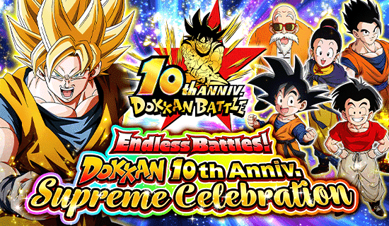
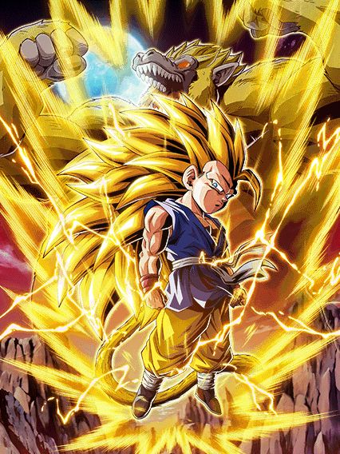
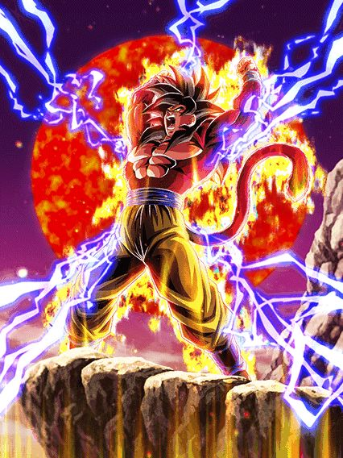
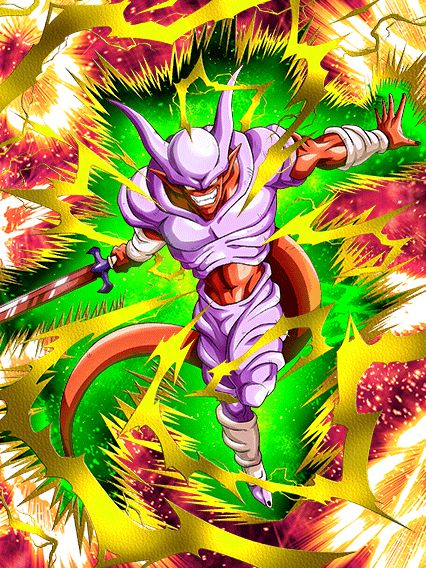
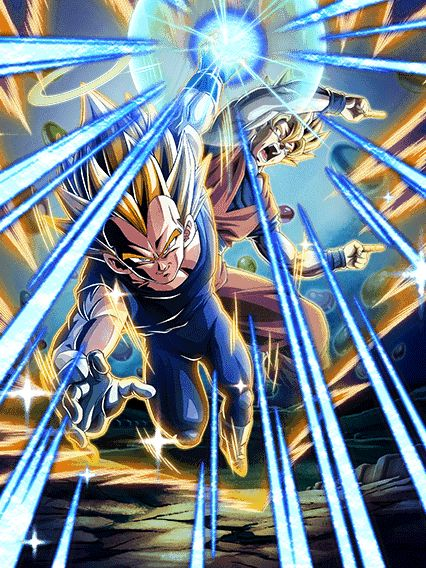

O DÉCIMO ANIVERSÁRIO

Com os diversos eventos, novos personagens, EZAs e até a oportunidade de pegar um dos novos LRs de graça, eu posso afirmar com certeza que esse é o mais grandioso aniversário da história.
Parabéns, Dokkan.
^
Sumário (clique para ir a qualquer um dos tópicos)
- O Lançamento do "Dokkan 2"
- GOKU E VEGETA TAG / SUPER VEGETTO
- Mr. Satan STR
- GOKU GT SSJ3/SSJ4
- Vegeta Blue Evolution STR
- Super EZA do Super Vegetto AGL
- SUPER EZA DO BUUHAN INT
- Super EZA do Gogeta STR
- Super EZA do Janemba INT
- EZA do Goku Namek INT
- EZA do Freeza Full Power AGL
- VEGETA E GOKU TAG / SUPER GOGETA
- Bills AGL
- GOHAN SSJ2 CARNIVAL
- Goku e Freeza Carnival
- O incidente dos "chutes infinitos" 💀
- SEZA do Gohan SSJ2 INT
- SEZA DO CELL TEQ
- o eza do goku kaioken lr
- O EZA DO VEGETA MAMACO LR
- Trunks + Goten F2P
- PICCOLO DAIMAOH LR F2P
- o dokkan awakening do goku daima f2p
O LANÇAMENTO DO DOKKAN 2

Uma das maiores atualizações de todas.
A atualização 5.25.0 trouxe diversas novidades pro Dokkan, incluindo novos ícones de loading e uma nova aba de eventos só para eventos difíceis
Mas com certeza a maior atualização foi no visual das batalhas

Um visual totalmente repaginado, com novos ícones de batalha, porcentagem na barra de HP, animações de sprite novas, novas animações de ataques básicos e muito mais
Apesar de ser no geral apenas uma atualização visual, as mudanças foram tão impressionantes que a comunidade nomeou a atualização de "Dokkan 2", por simplesmente fazer o Dokkan parecer um novo jogo.
GOKU E VEGETA TAG / SUPER VEGETTO
")
Além de ter uma nova Leader Skill de 250% de HP e 220% de ATK e DEF pras categorias, esse também é o primeiro card onde você pode livremente trocar entre Goku e Vegeta a partir do turno 4
O Goku é similar aos GT Boys do Oitavo Aniversário, stackando 50% de ATK no Ultra SA e 30% no SA
Nos primeiros 3 turnos ele tem 90% de redução de dano nos slots 2 e 3, que cai para apenas 40% depois
Além disso, ele dá suporte de Ki e 40% de DEF pra Earth-Protecting Heroes e Potara
 + Super Saiyan Goku")
O Vegeta é o oposto do Goku, stackando DEF em ambos Supers, mudando o suporte pra 40% de ATK e tendo Defesa Ativa e 70% de redução de dano no slot 1
Ambos Goku e Vegeta tem Active Skills diferentes, onde na Active do Vegeta eles quebram os Potara e ganham +18% de ATK e DEF e Defesa Ativa permanente
E caso você use a Active do Goku..

O Vegetto dura apenas 4 turnos, e 1 turno já é o suficiente pra ele humilhar todas as lutas 💀
O cara tem Defesa Ativa, 60% de redução de dano, scouter, suporte de 40% de ATK e DEF, lança um Ultra SA adicional..
Ele é a combinação perfeita entre o Gohan Beast LR e qualquer personagem de counter, já que ele ganha mais ATK a cada golpe que leva, tem uma Active que atraí todos os golpes pra ele e countera todos eles enquanto tem as melhores animações do jogo
É bem óbvio que com os stacks do Goku e do Vegeta esse cara é invencível enquanto os counters dele derretem qualquer boss.
Mr. Satan STR

O melhor SSR secundário de todos?
Esse cara dá Ki e 50% de ATK e DEF pra Earth-Protecting Heroes, tem 90% de redução de dano pra 1 golpe por turno e depois de levar esse golpe tem 85% de chance de desvio
Como se não bastasse isso, ele tem uma das melhores OSTs do jogo e uma das Actives mais insanas

Convidaram a melhor fusão pro aniversário.
GOKU GT SSJ3/SSJ4

Esse cara já começa sendo ridiculamente quebrado, tendo 70% de chance de desvio e Defesa Ativa por 4 turnos
Além disso, ele ainda tem um bom dano, defesa aceitável e dá suporte de 50% de DEF pra Power Beyond Super Saiyan
Você pode se transformar em Oozaru quando estiver abaixo de 70% de HP ou simplesmente a partir do turno 5
 (Golden Giant Ape)")
A sprite atualizada desse cara tampa até os orbs na tela 💀
Essa é uma transformação gigante comum com o mesmo jeito das outras e o bug de impedir o boss de dar super, nada demais
A transformação só dura 1 turno, e assim que acabar ele se transforma em SSJ4

Esse cara dá 70% de DEF e 10% de redução de dano pra Giant Ape Power e Power Beyond Super Saiyan, oq já torna ele insano
Junto desse suporte, ele ainda dá 44% de ATK e DEF pra todos aliados por 2 turnos no Ultra SA, e stacka 20% de ATK e DEF em ambos Supers
Além de tudo, ele ainda cura HP, tem SA adicional com 24 de Ki, chega a 100% de chance de crítico, tem Defesa Ativa.. simplesmente peak.
Vegeta Blue Evolution LR

2024 foi o ano do Vegeta, 2025 não é.
Esse cara é similar ao Goku Black Rosé PHY do ano passado, precisando de muitas orbs pra lançar vários adicionais com chances horríveis de serem Super Attacks 💀
Ele tem 30% de redução de dano por 6 turnos, e cada golpe feito no turno dá 7% de redução temporariamente
O grande problema do Vegeta é ele precisar lançar 6 SAs pra ter mais redução de dano, sendo que os adicionais dele tem apenas 30% de chance de serem Supers
Junta isso com a falta de novas animações e o fato do Vegeta não ter uma Active Skill e você tem um card com ótimo dano e boa defesa, mas muito problemático.
O Super EZA do Super Vegetto AGL
O rei dos counters ressurge.
Bro tem 40% de redução de dano base e +40% apenas para ataques básicos, builda crítico, ATK e DEF tomando alguns golpes e até dá um pouquinho de suporte defensivo pro time também
Ele até ganha Defesa Ativa se estiver abaixo de 50% de HP, mas não dá pra contar com isso sempre né
Em geral, ele infelizmente é vítima de Super Attacks, mas o dano dele é ridiculamente bom e o novo Vegetto ajuda ele bastante.
O SUPER EZA DO BUUHAN INT
")
Esqueceram de balancear esse aqui.
O Buuhan tem um monte de mecânicas de graça pq sim, lançando um SA adicional, mudando orbs pra rainbow e dando suporte sem condição nenhuma
Como se não bastasse, ele é um nuker que ganha 40% de ATK, 30% de DEF e cura HP por orb pega
E pra completar, ele ainda chega a 66% de redução de dano e crítico garantido pegando apenas 3 rainbow orbs
O melhor SEZA sem competição nenhuma.
O Super EZA do Gogeta STR

O Gogeta é um personagem de muito dano e suporte, tendo um SA adicional garantido e dando Ki e 40% de ATK pra todos aliados se estiver nos slots 2 ou 3
O maior erro dele é ganhar apenas 30% de redução de dano temporariamente no turno, juntamente com ter 70% de chance de ter Defesa Ativa contra inimigos Super Class (pelo menos é garantida contra Extreme Class)
Ele também precisa de rainbow orbs pra ter mais ATK e chance de crítico.. mas ele não cria rainbow orbs 💀
Ele certamente não ficou ruim, mas ele não chega nem perto de ter sido o deus que ele já foi.
O Super EZA do Janemba INT

Desvia-ou-morre, mas competente
O Janemba tem Defesa Ativa e 90% de chance de desvio no slot 1, o que já é muito forte
Pós-super a chance de desvio cai pra 70%, mas aí ele já ganhou um pouco de defesa, então tá tudo certo
Similar ao Gogeta, o Janemba dá Ki e 40% de DEF pra todos aliados estando nos slots 1 ou 3
Não é um personagem de dano, mas que certamente consegue se manter no slot 1 e ajudar o time.
O EZA do Goku Namek INT
O Goku agora stacka 50% de DEF no SA e 50% de ATK e DEF no Ultra SA, o que significa que ele consegue stackar muito rápido por causa dos adicionais que ele já tem
O grande problema é ele ter Defesa Ativa mas só por 6 turnos, juntamente com ele ter 50% de redução de dano mas só no slot 1
O dano dele ficou maravilhoso, mas a defesa dele vem toda dos stacks, o que torna ele muito instável pra ficar no slot 1 e ao mesmo tempo é muito arriscado ficar fora dele
Ele é forte e útil, mas não é quebrado como todos queríamos que fosse.
O EZA do Freeza Full Power AGL
De forma similar ao Goku, o Freeza stacka 50% de ATK no SA e ambos ATK e DEF no Ultra SA
A grande diferença dos dois está no fato de que o Freeza tem Defesa Ativa por somente um turno, mas após levar 3 ataques ele tem 70% de redução de dano no slot 1
É uma diferença bem considerável já que o Goku perde a principal mecânica defensiva dele enquanto o Freeza perde apenas uma parte do ATK e DEF dele após 6 turnos, mas ainda é capaz de tranquilamente se segurar no slot 1 enquanto stacka
VEGETA E GOKU TAG / SUPER GOGETA

Esse card é super similar ao Vegetto TEQ, onde o Vegeta fica no slot 2 e stacka ATK e o Goku stacka DEF no slot 1
A maior diferença entre os cards é que o Vegeta tem +300% de DEF e Defesa Ativa no começo da luta, o que é um pouco pior que a redução de dano que a base do Vegetto TEQ tem mas fazer oq né
 + Super Saiyan Vegeta (Angel)")
O Goku tem 80% de chance de desvio e Defesa Ativa no slot 1, o que é melhor que a redução de dano pura sem nenhum stack, mas também faz dele um pouco "desvia-ou-morre" se você der azar
A Active do Goku resulta no lendário Veku, impede o boss de atacar por 1 turno e no turno seguinte o Goku fica com desvio garantido, o que é bem quebrado
Mas nós sabemos oq realmente importa nesse card.
O card que não foi vazado nem nada xd
A Active Skill desse cara dá 54% de ATK e DEF pra todos aliados e deixa eles Super Efetivos por 1 turno, o que é absurdamente ridículo e faz ele parecer um card fan made
Tirando isso, ele ainda tem rainbow orb change, Defesa Ativa, 2 Ultra SAs adicionais, possíveis 80% de redução de dano, crítico garantido, e a lista vai indo..
Além de tudo isso, ele é imune à debuffs e tem as animações e OSTs mais geniais já feitas, é simplesmente peak.
Bills AGL
Oq o bro está fazendo aqui? 😭
Esse cara dá Ki e 50% de ATK e DEF pra nova categoria Successors, além de também mudar orbs pra rainbow gratuitamente
Ele tem 50% de chance de desvio e por 7 turnos tem Defesa Ativa e lança um adicional com 50% de chance de ser SA
Ele até stacka 20% de ATK e DEF no SA e consegue dar um dano bem "ok" dependendo do quão alto estiver o HP do boss, mas é melhor só focar no suporte mesmo
GOHAN SSJ2 CARNIVAL
")
Bem vindo de volta, Gohan AGL.
O Gohan é um personagem de dano puro e tem animações e OSTs simplesmente incríveis
Ele precisa atacar 8 vezes pra buildar a passiva toda, e adivinha? ELE TEM ADICIONAIS PRA ISSO
A grande mecânica dele é ganhar um aumento de ATK e DEF ridiculamente alto a partir do quinto turno dele, que é onde você pode usar a Active Skill que simplesmente destrói qualquer coisa
Junta isso com Defesa Ativa, um pouquinho de redução de dano e DEF multiplicativa e você cozinha.
Goku e Freeza Carnival
 (Angel) + Goku")
O lado Freeza desse card é meio que incompetente, tendo um total de ZERO mecânicas defensivas caso ele não esteja abaixo de 77% de HP
Ele também precisa que especificamente a rotação seja inteira Super Class ou Extreme Class pra ter buffs importantes como SAs adicionais e crítico garantido
Ele até dá 77% de ATK e DEF pra Representatives of Universe 7 e Battle of Fate no começo da luta, mas não ajuda se ele em si é muito frágil
O Goku é muito mais normal, tendo Defesa Ativa, 59% de redução de dano pegando uma rainbow orb, stacka 50% de ATK no SA..
Na Active dele, ele cura 77% de HP, e na Active do Freeza eles fazem a finalização do torneio do poder e estouram o boss
Em geral, só não existem motivos pra trocar pro lado Freeza depois que o Goku chega na luta, só pra usar a Active mesmo
Acho q erros foram cometidos com os personagens do torneio do poder 💀
O incidente dos "chutes infinitos"

Esse bug aconteceu com personagens tag que fazem um ataque em alguma das Active Skills deles, como o novo Goku e Vegeta AGL e o Goku e Freeza
Basicamente, depois de usar a Active, toda vez que você trocasse de personagem os adicionais seriam ativados outra vez, ou seja, trocando 100 vezes você lançaria 100 ataques adicionais em 1 turno
Isso é tão ridículo que foi possível matar um boss com mais de 1 bilhão de HP usando esse bug
Ele foi corrigido mais ou menos 1 dia depois de ser descoberto, mas foi hilário ver um único personagem atacando centenas de vezes.
O Super EZA do Gohan SSJ2 INT
Agora ele tem a defesa E o dano que precisava.
O Gohan agora é um nuker muito mais respeitável, tendo orb change duplo e dando 40% de ATK e DEF pra Super Class
Caso ele pegue 3 orbs ele tem 50% de redução de dano e ainda ganha 40% de chance de desvio se tiver um inimigo Extreme Class
Caso ele pegue 15 orbs ele tem um total de 632% de ATK junto com os 50% por orb pega e crítico garantido
E pra finalizar, caso ele caia abaixo de 58% de HP, ele muda TODOS os orbs pra INT e ganha 80% de redução de dano, facilitando de ele ficar no slot 1 e destruir tudo.
O SUPER EZA DO CELL TEQ
Da mesma forma que o Gohan, o Cell é um nuker com orb change duplo, só que a utilidade dele é muito maior que só dano..
O Cell tem 20% de redução de dano e chance de crítico e ganha +10% pra ambos por rainbow orb pega, além de ganhar mais 20% se tiver um inimigo Super Class
Além da redução de dano e a capacidade de nukar, ele dá 40% de DEF pra todo mundo se tiver um aliado Extreme Class no turno e juntamente com tudo isso ainda cura HP no SA
Os EZAs de vilões andam sendo ridiculamente fortes.
o eza do goku kaioken lr
")
O que aconteceu aqui??
Então uhhh... o Goku muda orbs aleatoriamente pra STR né? Os caras tiveram uma ótima ideia
Ele ganha 4% DE REDUÇÃO DE DANO POR ORB STR PEGA NO TURNO
Eu não tenho palavras, é genuinamente ridículo
O orb change não é dos melhores e a redução é SÓ DE ORBS STR, COMO ALGUÉM PENSOU NISSO???
Ele dá bastante dano, é só isso.
O EZA DO VEGETA MAMACO LR

Gohan Beast LR 2. (??????????)
Junto da Defesa Ativa que ele já tinha, o Vegeta agora tem 60% de redução de dano no slot 1, oq faz ele ser capaz de tankar como o Beast
Além disso ele fica Super Efetivo com 24 de Ki e tem um dano e defesa muito bons mesmo não estando no slot 1
Ou seja, os caras pegaram um card que não tinha dano e defesa e transformaram ele numa lenda
Por sinal ele fica mais quebrado ainda se tiver o suporte do Goku SSJ4 AGL no turno 💀
")
Descanse em paz, Ki +5.
Agora o Vegeta tem Ki +6, dano bem alto e crítico garantido, coisa bem básica de forma gigante hj em dia
Vale lembrar que esse oozaru dura mais de um turno, então o dano realmente ajuda bastante.
Trunks e Goten Tag F2P
Esse card tem a nova mecânica de tag e em geral acaba sendo muito simples
O Trunks é um nuker mas que só ganha stats a mais pegando orbs PHY, mas ele não muda orbs 💀
Caso ele pegue pelo menos 3 ele ganha Defesa Ativa, o que é interessante
A partir do turno 4 o Goten chega na luta
O Goten é meio estranho, já que ele só ganha stats a mais pegando orbs que NÃO sejam PHY
Caso ele pegue 5 orbs ele tem Defesa Ativa e 30% de redução de dano, o que é até que bem aceitável
Ambos tem Active Skills, sendo a do Goten mudar orbs INT pra rainbow e a do Trunks mudar orbs INT pra PHY
Veremos se no futuro um EZA vai ajudar eles.
PICCOLO DAIMAOH LR F2P
Merecia ser um Carnival.
Esse cara é feito pra um time Extreme Class ou Demonic Power, dando 60% de ATK e DEF pra todo mundo, tendo mais ATK e DEF próprios e Defesa Ativa se todos aliados forem um dos dois
Nessa primeira forma ele tem 50% de chance de desvio no slot 3, então é pra lá que ele vai
No turno seguinte você já pode usar a Standby dele
")
O Piccolo agora tem orb change duplo e coloca 7 esferas do dragão entre os orbs, sendo similar ao Kamehameha Família
Além de ter um aumento nos buffs e ter o desvio no slot 2 também agora, ele ganha +100% de ATK e DEF se pegar pelo menos 6 orbs, o que é bem tranquilo
Pegando todas as 7 esferas você faz o seu pedido
Com buffs ainda maiores, desvio em qualquer slot, Defesa Ativa, o orb change duplo e o suporte.. esse cara é muito forte
Não só as animações e OSTs dele são ótimas, mas em geral ele ajuda bastante um time Demonic Power, sendo totalmente usável e uma boa opção no time, e é exatamente isso que um card F2P deveria ser.
o dokkan awakening do goku daima f2p
 (DAIMA)")
Alguém ajude esse personagem 💀
Esse cara dá 40% de ATK pra todo mundo se tiver um aliado Dragon Ball Seekers no turno.. e é basicamente isso
Ele não tem mecânicas defensivas, o dano dele é baixo e o melhor que ele tem é a arte e animações bonitas..
Só um segundo Dokkan Awakening pra salvar esse rapaz.
Você chegou ao fim dessa página!
Bom.. por enquanto né, a celebração tá acontecendo agora e tals..
Obrigado por ler tudo, e fica a vontade pra ver outras